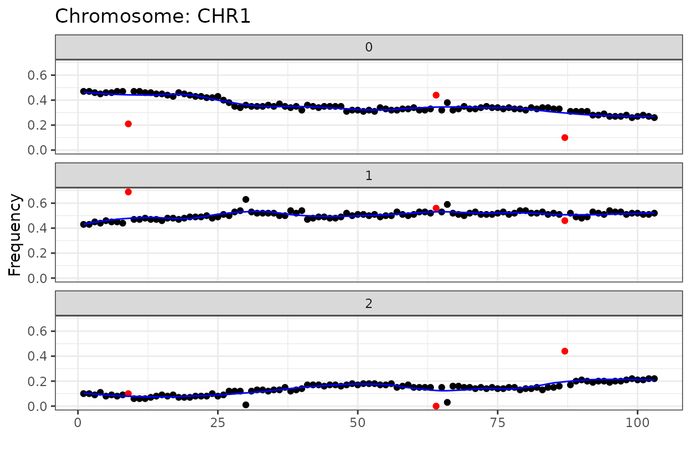

Linkage Groups and Marker Order
Andrey Vega Alfaro
2025-05-05
Source:vignettes/Linkage_Groups.Rmd
Linkage_Groups.RmdIntro
This vignette provides an overview on how to estimate linkage groups,
and order markers using functions in the geneticMapR and
MapRtools packages. We continue to use genotype data from a
biparental F2 table beet population.
Setup
The package includes helper functions to check and install from CRAN or GitHub. Feel free to use them as shown below if you need to install packages needed for following along this article.
# Ensure devtools is available for GitHub installs
load_or_install_cran("devtools")
# Install/load GitHub packages
load_or_install_github("MapRtools", "jendelman/MapRtools")
load_or_install_github("geneticMapR", "vegaalfaro/geneticMapR")
# Install/load CRAN packages
load_or_install_cran("ggplot2")
load_or_install_cran("tidyr")
load_or_install_cran("tidyverse")
load_or_install_cran("parallel")1. Data
To avoid long runtimes, precomputed genotype data and LOD matrices
are loaded from geneticMapRFiles. The two genotype files
loaded are geno.het.bin and geno.hom.bin.
geno.het.binis a genotype matrix of 2480 marker bins by 100 individuals. Includes heterozygous and homozygous markers. Rows are markers and rows are named (e.g.,CHR7_192222). Columns are individuals and columns are named (e.g., 2002-F2-Beta-B10).geno.hom.binis genotype matrix of 998 marker bins by 100 individuals. Includes homozygous markers only. Rows are markers with rownames (e.g.,CHR7_192222) and individuals are columns with column names (e.g., 2002-F2-Beta-B10)..
# Binned Genotype
url1 <- "https://raw.githubusercontent.com/vegaalfaro/geneticMapRFiles/main/R_data/binned_geno_1629.RData"
# Download file
if (!file.exists("binned_geno_1629.RData")) {
download.file(url1, destfile = "local_copy.binned_geno_1629.RData")}
# Load
load("local_copy.binned_geno_1629.RData")LOD matrices
Precomputed LOD matrices will be loaded because they take a while to run. The uploaded LOD matrices are:
LODmat.hetLarge matrix containing LOD scores for each marker pair. Includes Heterozygous markers and Homozygous markers.LODmat.homLarge matrix containing LOD scores for each marker pair. Includes Homozygous markers only.
(For info on marker typesSee marker type analysis from the article “Recode Markers” under the Articles tab)
# LOD matrices
url2 <- "https://raw.githubusercontent.com/vegaalfaro/geneticMapRFiles/main/R_data/LODmats_1629-2025-03-12.RData"
# Download file
if (!file.exists("binned_geno_1629.RData")) {
download.file(url2, destfile = "LODmats_1629-2025-03-12.RData")}
# Load
load("LODmats_1629-2025-03-12.RData")Your own LOD matrix
If you need to run your own LOD matrices, below I show an example on
how to do so using MapRtools and the MLEL function. Make
sure to check how many cores you have available in your machine. The
example is for an F2 population from two (inbred) parents.
However, MLEL supports several population types.
2. Linkage Groups
The objective in determining linkage groups is to identify the smallest LOD (logarithm of odds) threshold at which all chromosomes are correctly separated into their own linkage groups. Linkage groups are clusters of genetic markers that are inherited together and correspond to physical chromosomes. The goal is to identify these groups by assessing how often markers are co-inherited across progeny of, in this case, an F2 mapping population. So:
Markers that are:
Close together on the same chromosome tend to be inherited together (low recombination → high linkage).
Far apart or on different chromosomes are inherited independently (high recombination → low or no linkage).
LOD threshold tradeoffs
The LOD threshold determines how stringently you connect markers into groups:
Too low: Spurious linkage → falsely merges different chromosomes.
Too high: Real linkage missed → splits chromosomes, especially if:
There are long arms with low marker density (low resolution), or recombination hotspots create perceived gaps.
So, for beet (2n=18; 9 chromosomes), we’re trying to tune the LOD threshold so that exactly 9 linkage groups emerge, matching the known number of chromosomes.
This is often done empirically:
Estimate pairwise LOD scores between all markers.
Build a graph or a figure to visualize linked markers.
Adjust the threshold to get the correct number of groups (for example, by counting connected components in a graph).
We will get to this shortly, but before let me show you some theory behind it.
Some math behind LOD scores
The LOD score compares two hypotheses:
- H1: The two markers are linked at a certain recombination frequency (θ < 0.5).
- H0: The two markers are not linked (θ = 0.5, i.e., independent assortment).
The formula is:
A higher LOD means stronger evidence that the markers belong to the same group. Usually a treshold is set to define linkage groups.
To visualize linkage group separation, you can use the
MapRtools package to generate a candy stripe bar plot. This
plot helps assess whether chromosomes have been cleanly split.
Linkage group separation
Let’s use MapRtools LG function to estimate
linkage group separation. You can toggle with the threshold. You can try
different thresholds for example start 2 to 20 and move up iteratively.
By counting the stripes we can figure out which threshold is
appropriate. The black line on top represent misplaced markers or
markers in Linkage Groups outside the largest first 9.
For homozygous markers, nine linkage groups are first formed at a LOD score of 12. This configuration remains stable up to a LOD of 18, which is support for the grouping structure and suggests reliable marker clustering.
When heterozygous markers are included alongside homozygous markers, the pattern shifts slightly. In this combined dataset, nine linkage groups are formed at a higher LOD score of 19. However, the grouping is less clear-cut than in the homozygous-only scenario.
3. Linkage Group Separation
We’re going to demonstrate the next steps with the set of homozygous markers for convenience. In reality you may have a combination of homozygous and heterozygous markers. It all depends on your marker set and which steps you took to filter them. Other articles of this package show ways to filter markers. Make sure to check them out.
map <- extract_map(geno.hom.bin, markers = TRUE) # Extracts physical map
LGhom <- LG(LODmat.hom, thresh = 12) # Returns assiged linkage group
LGhom$chrom <- map$chrom
LGhom <- LGhom[LGhom$LG <= 9, ] # Keeps largest 9 linkage groups
map <- merge(LGhom, map, by = c("marker", "chrom")) # Merge to connect CHR to LGs
tab <- table(map$chrom, map$LG) # Make a table of CHR and LGs
tab <- tab[, order(max.col(t(tab), ties.method = "first"))] # Order table
knitr::kable(tab) # Print table| 6 | 7 | 8 | 5 | 4 | 3 | 1 | 2 | 9 | |
|---|---|---|---|---|---|---|---|---|---|
| CHR1 | 102 | 0 | 0 | 0 | 1 | 0 | 0 | 0 | 0 |
| CHR2 | 2 | 82 | 0 | 0 | 2 | 0 | 0 | 0 | 0 |
| CHR3 | 0 | 0 | 70 | 0 | 1 | 0 | 0 | 0 | 0 |
| CHR4 | 0 | 0 | 0 | 109 | 2 | 0 | 1 | 0 | 0 |
| CHR5 | 0 | 0 | 0 | 0 | 103 | 0 | 1 | 0 | 0 |
| CHR6 | 0 | 0 | 0 | 0 | 0 | 133 | 0 | 0 | 0 |
| CHR7 | 1 | 1 | 0 | 0 | 0 | 0 | 164 | 1 | 0 |
| CHR8 | 0 | 0 | 0 | 0 | 2 | 0 | 0 | 145 | 1 |
| CHR9 | 1 | 0 | 0 | 0 | 0 | 0 | 0 | 0 | 61 |
When the thresh argument of the MapRtools::LG() function
is provided as a single numeric value, the function returns a data frame
with the assigned linkage group for each marker.
Small groups with only a few markers are likely artifacts of sparse coverage or noise. For example chromosome 1 has most markers on linkage group 6, however, linkage group 6 also encompasses a few markers from chromosomes 2, 7 and 9. To focus on biologically meaningful results, we subset the largest nine linkage groups, which correspond to the expected number of chromosomes in beet.
4. Linkage Trimming with trim_LG()
When working with high-density genotype datasets, it’s important to identify and remove markers that do not belong to the same linkage group (LG) as the majority. Take for example our example of LG 6 which should contain only markers belonging to chromosome 1. This process, called linkage trimming, helps improve the accuracy of genetic map construction.
We developed the function trim_LG() to streamline this
process. It builds on MapRtools and allows you to:
Filter markers based on LOD score thresholds for LG assignment
Visualize haplotype frequencies before and after trimming
Interactively define LOD parameters, or automate them by providing the values directly
Remove outlier markers based on haplotype frequencies
If you’re working with several chromosomes, or populations, and already have a reference genome that provides marker order, this function helps you trim away spurious markers without the need to re-order them. However, if no reference is available, we recommend ordering the markers first (e.g., with order_markers() from MapRtools).
The code chunk below will:
Estimate LOD scores for markers in CHR1
Plot the initial haplotype frequency
Generate a plot across a LOD range (5 to 35, in steps of 1)
Apply a final threshold of 18 to assign markers to the primary LG
Optionally remove outlier markers
Return a trimmed genotype matrix, filtered map, LOD parameters used, and both plots
# CHR1
result_chr1 <- trim_LG(chromosome = "CHR1",
map = map,
pop_type = "F2",
geno = geno.hom.bin, # geno from the ordering step
interactive = FALSE,
drop_outliers = TRUE,
n_cores = 6,
initial_LOD = 5,
end_LOD = 35,
step_LOD = 1,
selected_thresh = 18
)
#> Processing chromosome: CHR1
#> Plotting initial haplotype frequency...
#> Estimating LOD matrix using 3 cores...
#> Generating linkage group plot...#> Filtering markers at LOD threshold = 18
#> Removing outliers...This function is also interactive! if you you set the argument
interactive = TRUE then the function requests the input of
the user and you can type in the console the initial LOD, end LOD and
the step. It will show you a plot and then you can select a threshold
for linkage grouping.
The goal is to select a threshold that represents most of the markers as one linkage group and pushes away spurious markers that do not belong.
5. Ordering Markers with order_and_plot()
After trimming spurious markers from each chromosome, it’s important
to optimize their order based on recombination frequencies. The function
order_and_plot() helps streamline this step by combining
marker ordering and haplotype visualization into a single workflow.
This function:
Estimates the recombination frequency (RF) matrix with
MapRtools::MLEL()Performs multiple iterations of
MapRtools::order_markers()Selects the best marker order based on the smallest Sum of Adjusted Recombination Fractions (SARF)
Generates a faceted plot of all ordering attempts for visual inspection
Displays a haplotype plot for a subset of individuals in the ordered matrix
It is designed to operate on trimmed genotype matrices, typically one chromosome at a time.
Example: Ordering markers in a single chromosome
This code chunk will:
Attempt 6 marker orderings for CHR1
Plot the original vs. optimized order for each iteration
Select the best order (lowest SARF)
# Chromosome 1
chr1_order <- order_and_plot(result_chr1$trimmed_genotype,
n.iter = 6,
CHR = "CHR1"
)We can observe some correspondence between the original marker order and the optimized order. Occasionally, the order may appear reversed. These plots help identify potential inversions or other chromosomal features. In this section, the focus is on demonstrating the process of marker ordering. The biological interpretation depends on the crop’s genome structure and the quality of the reference genome. Use your intuition and understanding of the underlying biology to interpret the patterns in the plots.
order_and_plot() uses MapRtools
order_markers() which is based on solving the traveling
salesperson problem.
Efficient multiple chromosome ordering
If you’ve trimmed and stored genotype matrices for each chromosome in a named list, you can apply order_and_plot() in a loop:
result_list <- list(
CHR1 = result_chr1$trimmed_genotype,
CHR2 = result_chr2$trimmed_genotype,
# ...
CHR9 = result_chr9$trimmed_genotype
)
ordered_results <- lapply(names(result_list), function(chr) {
order_and_plot(result_list[[chr]], n.iter = 6, CHR = chr, prop = 0.25)
})
names(ordered_results) <- names(result_list)This approach allows efficient and reproducible marker ordering across your entire genome.
Save progress
# Save results as RDA
save(ordered_results, file = "processed_data/R_data/ordered_markers_pop2_list-2025-03-12.RData")